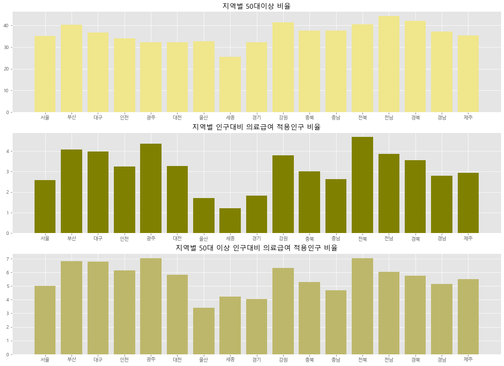
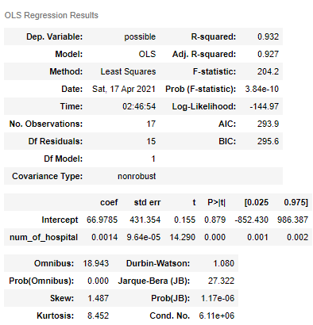

[ 서비스 소개 ]
'걱정마소'는 안심 바운더리 내 거주지 검색 서비스입니다.
보호자와 병원의 위치를 기반으로 하여
노인과 보호자 모두가 안심할 수 있는 안심 바운더리를 찾아주고,
그 안에서 최적의 거주지를 찾을 수 있게끔 도와줍니다.
" 지방에 계신 어머니를 서울로 모셔오고 싶은데,
제가 사는 곳과 가깝고 병원이랑도 가까워서 안심할 수 있는 집을 찾고 싶어요 "
" 아들이랑 가까이 살고 싶고 이왕이면 병원이랑도 가까웠으면 좋겠는데,
제가 원하는 가격대와 평수에 맞춰서 집을 검색하고 싶어요 "
" 암 치료 때문에 정기적으로 대학 병원을 방문해야 하는데,
병원과 자녀의 집 사이에 적당한 곳으로 이사를 가야할 것 같아요 "
[ 서비스 기획 동기 ]
** 왜 노인을 대상으로 한 서비스를 기획하게 되었는가? **
1. 나이가 들수록 의료 지원은 점점 필요해지는데,
노인 스스로 의료 문제를 해결하기에는 어려움이 많습니다.
20대 초반을 기점으로 개인을 부양해주는 가족의 수가 눈에 띄게 줄어듦을 확인할 수 있습니다.
자립 능력이 부족한 20대 이전과 노인의 경우,
20대 이전에는 이들을 부양해줄 가족이 충분한 반면,
노인들에게는 이들을 부양해줄 가족이 충분하지 않다고 보았습니다.
50대를 기점으로 의료 급여 적용 인구가 눈에 띄게 증가함을 확인할 수 있습니다.
의료 급여 지원을 받는다는 것은 본인의 의료 문제에 대해 외부의 지원이 필요하다는 의미로 볼 수 있습니다.
데이터 분석 결과, 이러한 의료 급여 적용 인구가 50대 이후부터 눈에 띄게 증가함을 확인할 수 있었고,
50대 이후 노인들이 자신의 의료 문제 해결에 어려움을 겪고 있으며 외부의 도움을 필요로 할 것이라 보았습니다.
2. 저소득층 노인들의 경우, 의료 급여의 주 대상자로서
외부로부터의 도움이 더욱 필요한 상황입니다.

50대 이상 인구 비율이 가장 낮은 세종시의 경우, 의료 급여 적용 인구 비율 또한 다른 지역에 비해 낮음을 확인할 수 있습니다.
평균 소득이 높은 서울, 울산, 경기 지역과, 평균 연령이 가장 낮은 세종시의 의료 급여 수급 인구가 낮다는 사실을 통해,
저소득층 노인 인구들이 의료 급여의 주 대상자이며 그만큼 어려움을 많이 겪고 있을 것이라 보았습니다.
** 왜 거주지와 위치에 집중한 서비스를 기획하게 되었는가? **
1. 노인과 보호자 거주지 간 거리의 중요성
노인의 경우 자녀의 거주지로부터의 물리적 거리가 이들의 심리적, 신체적 건강에 큰 영향을 끼칩니다.
중증 질환을 갖고 있는 노인일수록 이들의 건강 관리에 자녀와의 물리적 거리가 더욱 중요하게 작용합니다.
자녀와 같이 사는지 따로 사는지, 따로 산다면 얼마나 가까이 사는지 등이
노인의 건강 관리에 있어서 매우 중요한 요소라고 판단하였고,
자녀 혹은 보호자와 같이 살지는 못하더라도 가까이에 거주할 필요성이 있다고 보았습니다.
장기 요양 실태 조사 결과에 따르면, 가족과 정부,사회가 부모 부양을 해야 한다는 의견이 가장 많았으며,
실제로 장기 요양 급여에 관련된 의사결정의 대부분을 자녀가 결정하고 있음을 확인할 수 있습니다.
노인의 부양 및 의사결정에 자녀 혹은 보호자가 매우 중요한 역할을 담당하고 있고,
노인의 건강 상태가 좋지 않은 경우,
그들의 건강 관련 의사결정을 대신할 만큼 자녀 혹은 보호자의 역할이 더욱 중요해짐을 알 수 있습니다.
그러나 장기요양 재가수급자 대상 가구 조사에 따르면, 약 60%가 자녀와 함께 살고 있지 않는 것으로 나타났습니다.
일상생활에서 타인의 도움이 필요하다고 판단되는 장기요양 재가수급자를 대상으로 한 조사라는 점을 감안한다면,
60%라는 자녀 비동거 가구 비율은 매우 높은 수치라고 판단할 수 있습니다.
또한 이들 중 노인 단독가구의 비동거 가족과의 거주지 거리를 분석한 결과,
동일 시군구 외에 거주하는 비율도 절반에 가까워 독거 수급자 노인의 돌봄 공백에 대응할 필요성이 크다고 보았습니다.
2. 노인과 병원 간 거리의 중요성
병원이 분산되어있고 병원의 수가 적은 곳은
치료가 가능한 질병임에도 불구하고 사망할 가능성이 높습니다.
치료가 필요한 시점에 바로 치료를 받을 수 있도록 병원과 가까운 곳에 거주할 필요성이 있다고 보았습니다.
지역별 병원위치 밀집지도
지역별 치료가능사망자 수 지도
두 지도를 비교해보면, 병원이 밀집해 있는 지역은 치료 가능 사망자 수가 적은 반면,
병원의 위치가 분산되어 있는 지역은 치료 가능 사망자 수가 높다는 사실을 확인할 수 있습니다.
이를 토대로 한 상관 분석 결과, 병원 수가 적을수록 치료 가능 사망자 수가 많고,
병원 수가 많을수록 치료 가능 사망자 수가 적은, 음의 상관관계를 확인할 수 있습니다.
음의 상관관계로 추측되는 그래프를 확인할 수 있고,
피어슨 상관계수와 상관계수 검정의 결과는 (-0.5470754353581047, 0.023040838287424443)
상관계수는 약 -0.547이 나왔고
p-value는 0.023으로
유의수준 5%에 유의한 가설검정 결과가 나왔습니다.
회귀분석 결과
* 단순회귀분석 결과 *
병원수 = 66.9785 + 0.0014 * 인구수
인구가 1만명 증가할 때마다 병원은 14개씩 늘어난다고 예측할 수 있습니다
* 다중회귀분석 결과 *
병원수 = -1.054e+04 + 0.5520 * 시도별평균개인소득 + 0.0013 * 시도별 인구수